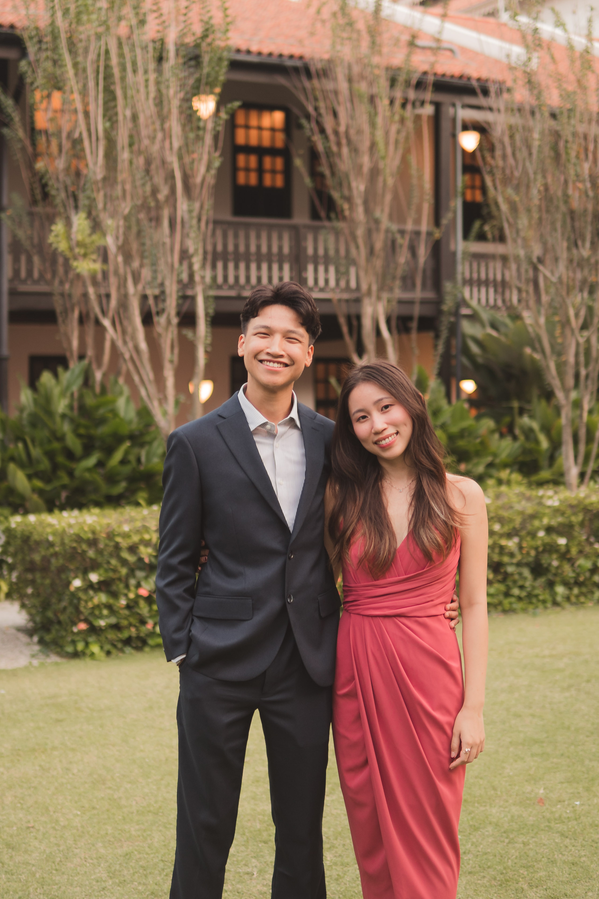
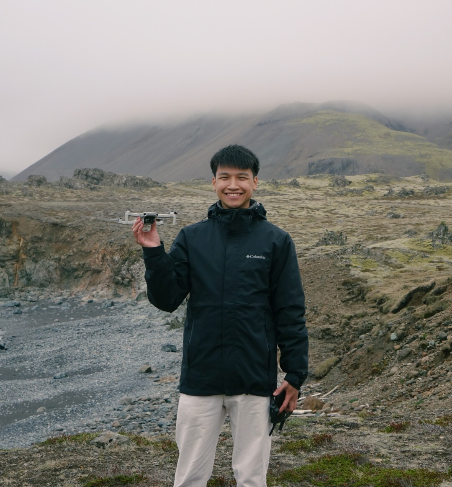

Peter Fung
Software Engineer, AI Native, Problem Solver, Tinkerer, Fan of good UIs
I love to build fun and interesting apps.
About Me
I'm very interested in how to improve applications to help users use them, understand them and enjoy them more.
Software Engineering
Experienced in production-level applications, implementing platforms, features and AI agent integrations.
Focusing on end-to-end implementations, from requirements to production deployment.
AI Native
I use AI in my daily life, from handling my life and tasks to my work. I have developed workflows to better communicate with AI and work side by side with it to be more effective.
I'm always trying out new AI tools and keeping the ones that earn a place in my workflow.